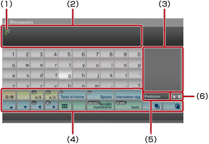
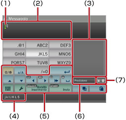

Informazioni sul menu XMB™ > Utilizzo della tastiera
Utilizzo della tastiera
La tastiera viene visualizzata automaticamente ogni qualvolta è richiesta l'immissione di testo. Queste istruzioni presumono l'uso della tastiera italiana. Per informazioni sull'utilizzo di tastiere in altre lingue, consultare la guida dell'utente per la lingua in questione.

(1) |
Cursore |
|---|---|
(2) |
Campo di inserimento testo |
(3) |
Consente di visualizzare le opzioni della modalità predittiva |
(4) |
Tasti operativi |
(5) |
Indica se la modalità predittiva è disponibile |
(6) |
Indicazione della modalità di inserimento |
Elenco dei tasti
I tasti visualizzati variano a seconda della modalità di inserimento e di altre condizioni.
 |
Consente di inserire un simbolo o un emoticon. |
|---|---|
 |
Consente di cambiare il tipo dei caratteri da immettere |
| Muove il cursore | |
| Cancella il carattere alla sinistra del cursore | |
| Inserisce uno spazio | |
| Inserisce un'interruzione di riga | |
 |
Copia o incolla parti di testo |
 |
Passa alla mini tastiera |
| Cambia la modalità di inserimento | |
| Consente di confermare i caratteri digitati ma non inseriti; consente di uscire dalla tastiera |
Immissione di caratteri
Utilizzando la modalità predittiva, è possibile immettere soltanto le prime lettere della parola; viene quindi visualizzato un elenco delle parole utilizzate più comunemente che iniziano con tali lettere. Per selezionare il termine desiderato, utilizzare i tasti direzionali. Terminato l'inserimento del testo, selezionare il tasto "Invio" per uscire dalla tastiera.
Note
- In alcune modalità di inserimento non è consentito l'uso di emoticon.
- Le lingue che si possono utilizzare per l'inserimento di testo sono le lingue di sistema supportate. Ad esempio, se la lingua del sistema è impostata sul francese, è possibile inserire il testo in francese. La lingua di sistema può essere impostata in
 (Impostazioni) >
(Impostazioni) >  (Impostazioni del sistema) > [Lingua del sistema].
(Impostazioni del sistema) > [Lingua del sistema]. - Per cancellare l'intero campo di testo, premere contemporaneamente i tasti
 + L1.
+ L1.
Utilizzo di una tastiera collegata
È possibile immettere testo utilizzando una tastiera USB o Bluetooth® (entrambe vendute separatamente). Una volta visualizzata la schermata di inserimento del testo, per utilizzare la tastiera collegata è sufficiente premere un tasto della tastiera.
Note
- Per i dettagli sul collegamento di una tastiera Bluetooth®, vedere (Impostazioni) >
 (Impostazioni degli accessori) > [Gestisci dispositivi Bluetooth®] in questa guida.
(Impostazioni degli accessori) > [Gestisci dispositivi Bluetooth®] in questa guida. - Quando è in uso una tastiera collegata non è possibile utilizzare la modalità predittiva.
- È possibile immettere un'interruzione di riga nel campo di immissione del testo premendo ALT + INVIO. L'interruzione di riga può essere inserita solo dove applicabile, per esempio durante la scrittura di un messaggio nella categoria
 (Amici).
(Amici). - Per cancellare l'intero campo di testo, premere contemporaneamente SHIFT + BACKSPACE.
- È possibile incollare parti di testo già copiate premendo Ctrl + V. Viene incollato l'ultimo testo copiato.
Utilizzo della mini tastiera
Selezionando dalla tastiera a dimensione intera, è possibile passare alla mini tastiera, in cui più caratteri sono assegnati a un unico tasto.

(1) |
Cursore |
|---|---|
(2) |
Campo di inserimento testo |
(3) |
Consente di visualizzare le opzioni della modalità predittiva |
(4) |
Consente di visualizzare i caratteri che possono essere immessi con il tasto selezionato. |
(5) |
Tasti operativi |
(6) |
Indica se la modalità predittiva è disponibile |
(7) |
Indicazione della modalità di inserimento |
 , il carattere immesso cambia. Ad esempio, per immettere [L], selezionare
, il carattere immesso cambia. Ad esempio, per immettere [L], selezionare  e premere sei volte il tasto
e premere sei volte il tasto  per spostare il cursore, posizionandolo dopo la lettera [L]. Selezionare quindi
per spostare il cursore, posizionandolo dopo la lettera [L]. Selezionare quindi Nota
È inoltre possibile utilizzare la modalità di inserimento del testo con una sola pressione. Utilizzare il tasto "Opzioni" per cambiare la modalità di inserimento del testo. Quando si utilizza questa funzione, le parole che possono essere create utilizzando combinazioni ricavate da una lettera (o un numero) su ogni tasto selezionato vengono visualizzate come opzioni di inserimento predittivo del testo. Ad esempio, se si seleziona il tasto "DEF3", le parole che iniziano con d, e, f o 3 vengono elencate nella finestra delle opzioni predittive sul lato destro della tastiera su schermo. Se viene visualizzato il simbolo ">", continuare a immettere lettere fino a visualizzare le opzioni predittive.
Elenco dei tasti
I tasti visualizzati variano a seconda della modalità di inserimento e di altre condizioni.
 |
Consente di inserire un simbolo |
|---|---|
 |
Consente di passare tra maiuscole e minuscole |
 |
Consente di inserire un'interruzione di riga |
| Consente di spostare il cursore | |
 |
Consente di eliminare il carattere a sinistra del cursore |
 |
Consente di inserire uno spazio |
|
Copia o incolla parti di testo |
 |
Consente di passare alla tastiera a dimensione intera |
 |
Consente di visualizzare il menu delle opzioni |
| Consente di cambiare la modalità di inserimento | |
| Consente di confermare i caratteri digitati ma non inseriti; consente di uscire dalla tastiera |